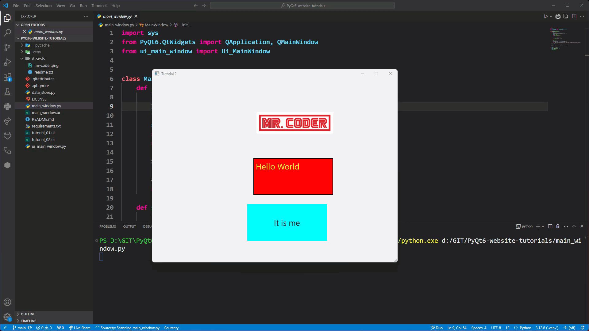

Tutorial 3 - Layouts¶
In this tutorial you will:
Learn about Qt’s three Layouts
Leanr about static and dynamic UIs
Apply Layout to organise a window
Static vs Dynamic UIs¶
Static UI’s don’t change in response to the size of the window. For example, if you launch the window we created in tutorial 2, you will notice that the labels do not respond to resizing of the window.

Notice how all three labels:
remain the same distance from the top left corner (coordinate 0,0)
remain the same size
A dynamic UI changes in response to the window size.
Which to use?¶
Static can be used where the window does not need to change. The use for this is less than it first seems. Even when the window fill the screen, its size is dependant upon the resolution of the screen. Therefore, for most applications, dynamic UI are the best option.
What are Qt Layouts?¶
Qt layouts are tools in the Qt framework that help organise how widgets appear in a window or application. Instead of manually setting the size and position of each widget, layouts automatically arrange them in a neat and logical way, even if the window is resized.
There are different types of layouts you can use in Qt:
Horizontal Layout
Vertical Layout
Grid Layout
Form Layout pairs labels with input fields, making forms easy to build.
Using layouts, and nesting layouts inside of other layouts, makes your applications look cleaner, more professional, and adaptable to different screen sizes without extra effort.
In this tutorial we will focus on the first three of these. Form layouts we will explore in a later tutorial.
Applying Layouts in Qt Designer¶
In Qt Designer there are two ways to apply layouts to a window:
right-click on a widget and then choose the layout
drag-and-drop a layout from the Widget library
The best way to apply layouts is reliant upon which layout it is (initial layout or subsequent layouts). The first layout is applied to the window, while subsequent layouts are nested inside this first layout.
Initial Layout¶
If you drag-and-drop the initial layout, then it will not apply the resizing settings (see below).

But Qt Designer will not allow you to right-click either (the options are greyed out).

The trick is to have some widgets already in the window before you right-click and access the context menu.
Subsequent Layouts¶
All subsequent layouts can use either method. I prefer the drag-and-drop method, so that is what we will use in these tutorials, but feel free to explore the right-click approach.
Exploring Qt Layouts¶
To make this quicker, we will start with the UI from last tutorial.
Open tutorial_2.ui (you should find it in File → Recent Forms)
Change windowTitle to Tutorial 3
Save the file as tutorial_3.ui (File → Save As…)
Now lets look at the three different layouts.
Horizontal Layout¶
The Horizontal Layout arranges widgets in a row of cells from left to right.
Right-click on the window
From the context menu choose Layout → Lay Out Horizontally

Note:
Each cell’s height is resized to fit the maximum height of the window.
The entire row’s size takes up the width of the window.
The size of each cell is relative to the size of its content.
Vertical Layout¶
The Vertical Layout stacks widgets one on top of another in a column of cells.
Undo the horizontal layout application
Right-click on the window
From the context menu choose Layout → Lay Out Vertically

Note:
Each cell’s width is resized to fit the maximum width of the window.
The entire columns’s size takes up the height of the window.
The size of each cell is relative to the size of its content.
Grid Layout¶
The Grid Layout places widgets in rows and columns, like a table.
Undo the vertical layout application
Right-click on the window
From the context menu choose Layout → Lay Out in a Grid

Note:
Although it initially looks the same as the vertical layout, you can drag widgets to the sides and top or bottom of other widgets to make a table.
Both the cell height and width are dependant upon the window size
Cells in the same row, share the same height
Cells in the same column, share the same width
Adding subsequent widgets¶
Adding subsequent widgets simply involves dragging and dropping a widget from the widget library onto a cell in the layout. The widget will inherent the properties (eg. height and width) of that cell.

Note the red line or box that indicates where the widget will be placed.
Nesting Layouts¶
Don’t forget that layouts are also widgets. This means that a layout can be placed inside the cell of another layout. This is how you develop complex UIs, something that we will explore in later tutorials. This is also why it is important to plan out your UIs so you have a good idea of where all your layouts should go.
Conclusion¶
Layouts are part of making good responsive UI and they are vital for complex UIs. This tutorials we have explored the three main window layouts.